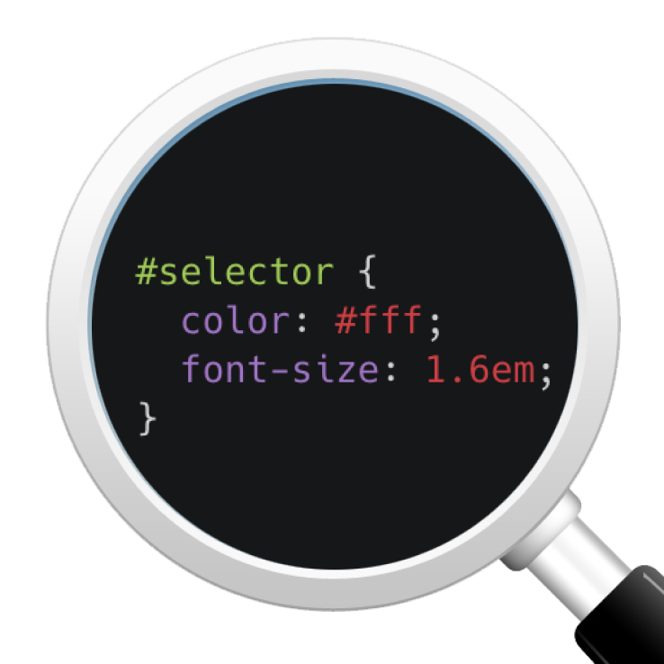
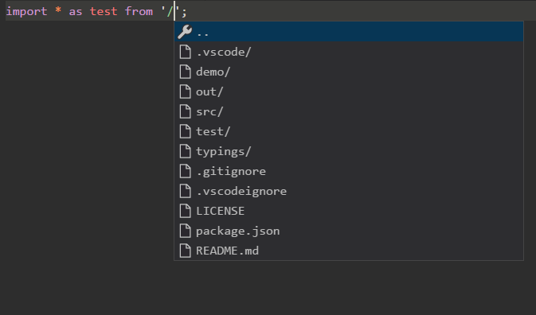

Useful extensions for beginners in VS Code
By Amir Aimurzayev on 15 Feb 2020

I collected on this page the most convenient extensions for those who are just starting to work with VS Code. Some of them are the most necessary, some less, but all of them are very convenient.
Material Theme
The theme for VSCode, with the most convenient way to work, has more than 5 million different options. Material theme is the most popular theme in VSCode. This theme is ideal for fans of dark colors and for those who like to work at night.
Live Server
This plugin is launched when you right-click on the HTML page, in the drop-down menu you need to select "Open with Live Server". After that, a tab with your project will open in the browser, which will refresh the page every time you make any changes to your project. It seems to me that this is not only convenient, but also effective. Since even a click on the reboot button takes a lot of time.

CSS Peek
Thanks to this plugin, you can go to css definitions directly from the html file, for this you need to right-click on the definition in the html file, and then select "Go to definition". This plugin is very convenient when you have many classes and their search can take time.
Bracket Pair Colorizer
This plugin paints the opening and closing brackets in the corresponding colors. Most often it is used in Javascript.
Prettier - Code formatter
The code formatting plugin that supports a wide range of languages. Bring any code to its normal form by pressing Ctrl + shift + p and selecting Format document in the drop-down menu. It enforces a consistent style by parsing your code and re-printing it with its own rules that take the maximum line length into account, wrapping code when necessary.
Auto Rename Tag
A convenient plugin for html, which when you change the opening / closing tag, it automatically changes another opening / closing tag.

Path Autocomplete
This is a very simple plugin that is used in both js and html. When writing the path to the file, the plugin indicates which files and folders are in the project. Thanks to this plugin, there is no need to remember the names of the necessary files, you just select the one you need in Explorer.
HTML CSS Support
If you have a lot of classes, identifiers in your work and you often have errors in the names when you write them manually, then this plugin is for you. This plugin automatically completes the name of the id or class for the html attribute based on the definitions found in your workspace or in the external files referenced by link.
Emmet
Sorry for the banality, but I could not help but include this plugin in the list of must-haves for beginners. Emmet plugin support is already built into VSCode. Additionally, you do not need to install the plugin. Emmet takes the snippets idea to a whole new level: you can type CSS-like expressions that can be dynamically parsed, and produce output depending on what you type in the abbreviation. Emmet is developed and optimised for web-developers whose workflow depends on HTML/XML and CSS, but can be used with programming languages too.
You can install any of these plugins by going to the VSCode Market Place.